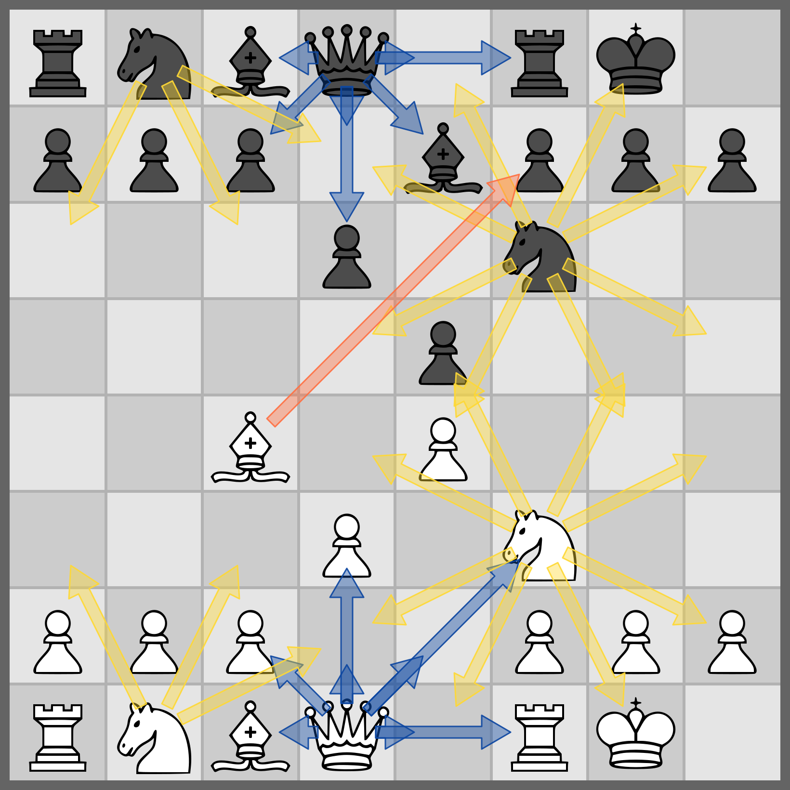

Commands
Command reference
One command-line interface drives every feature of ChessRTK ("crtk"), and one chess core sits underneath all of it. A FEN that validates in fen validate parses the same way in move list, engine perft, the workbench, and every dataset exporter — same parser, same move generator, same notation, so the same input always yields the same output. This page lists every area, subcommand, and option, grouped so you can find a command, copy its example, and trust the result to reproduce on the next machine.
Invocations follow crtk <area> <action> [options] [args]. From a build tree rather than the installed launcher, that becomes java -jar crtk.jar <area> <action> ... or java -cp out application.Main <area> <action> .... For anything this page leaves vague, crtk help --full prints the authoritative spec, and per-command help is either crtk help <area> <action> or crtk <area> <action> --help.
Command style and global conventions
The grammar is noun-verb: an area (the noun, such as engine or record) followed by an action (the verb, such as bestmove or export). A few areas add a second noun level, as in record export plain or record dataset npy. In scripts, spell out the full grouped form — it survives renames and reads clearly six months later.
- Structured values go through named flags.
--fen,--input/-i,--output/-o, and--formatmean the same thing everywhere they appear. - When scripting, put options before free-form positional args, and guard anything that could be mistaken for a flag — a FEN, a SAN move, a negative number — with a leading
--. - Position commands take the FEN positionally or via
--fen;--startposgives the standard start,--randomposa reachable random legal position. --verbose/-vturns a failure into a full stack trace on nearly every command. The lists below leave it out unless it is the only option worth mentioning.- Row-oriented commands share
--json,--jsonl,--no-header, and--quiet. - Engine-backed commands share one option block:
--protocol-path/-P,--max-nodes/--nodes,--max-duration,--multipv,--threads,--hash, and--wdl/--no-wdl.
Most of the surface never touches an external engine. The in-process commands (fen, move, position, engine benchmark, engine perft, engine perft-suite, engine mate, engine builtin, engine java, engine static) run start to finish inside the JVM. A configured UCI engine is required only for the workflows that delegate search: engine analyze, the engine bestmove* family, engine analyze-batch, engine bestmove-batch, engine compare, engine threats, engine uci-smoke, the --analyze tagging paths, and puzzle mine.
Areas at a glance
| Area | Purpose |
|---|---|
record |
Export, filter, split, and summarize .record files; build training datasets |
fen |
Validate, normalize, generate, transform, and render FENs |
gen |
Generate reusable data seeds and artifacts (alias surface) |
batch |
Run multiple ChessRTK CLI commands from one script |
move |
List, convert, and apply moves |
engine |
Analyze, evaluate, search, prove mates, and validate move generation |
mate |
Brute-force prove a forced mate without NN evaluation (shortcut for engine mate) |
position |
Inspect and compare positions |
book |
Render chess books, covers, studies, and diagram PDFs |
puzzle |
Mine, convert, tag, and summarize puzzle lines |
config |
Show and validate configuration |
workbench |
Launch the native command and analysis workbench (alias gui) |
doctor |
Check Java, config, protocol, engine, and local artifacts |
clean |
Delete session cache and logs |
help |
Show command help |
version |
Print ChessRTK version metadata |
record
A .record file is the canonical container for analyzed positions, puzzle trees, and engine PVs — JSON, or JSONL when you want streaming. Everything that produces analysis writes records; the record area is how you get them back out. It exports rows to text and tensor formats, merges, filters, and splits files, and summarizes what they hold. Spell out the grouped forms (record export ..., record dataset ...) in scripts.
| Subcommand | Purpose |
|---|---|
record export plain |
Convert .record JSON to Leela-style .plain blocks |
record export csv |
Convert .record JSON to CSV |
record export pgn |
Convert .record JSON to PGN games |
record export puzzle-jsonl |
Export verified puzzle rows as JSONL with LC0 policy values |
record export puzzle-elo-jsonl |
Export verified puzzle records with Elo and position tags |
record export training-jsonl |
Export coarse/fine FEN labels for training |
record dataset npy |
Export NumPy evaluation-regression tensors |
record dataset lc0 |
Export LC0-style policy/value tensors |
record dataset classifier |
Export one-logit binary classifier tensors |
record files |
Merge, filter, or split record files |
record stats |
Summarize record files |
record tag-stats |
Summarize tag distributions |
record analysis-delta |
Compare parent/child analysis changes |
record export plain
Convert a .record JSON array into Leela-style .plain blocks (mainline only by default).
| Option | Description |
|---|---|
--input/-i PATH |
Input .record JSON file (required) |
--output/-o PATH |
Output .plain file (default dump/<input-stem>.plain) |
--export-all / --sidelines |
Include all sidelines (default: mainline only) |
--filter/-f DSL |
Filter DSL to select which records are exported |
--csv |
Also emit a CSV export |
--csv-output/-C PATH |
Explicit CSV output path (default dump/<input-stem>.csv; also enables CSV) |
crtk record export plain --input dump/run.record --output dump/run.plain --sidelinesrecord export csv
Convert a .record JSON array directly to CSV (no .plain output).
| Option | Description |
|---|---|
--input/-i PATH |
Input .record JSON file (required) |
--output/-o PATH |
Output CSV file (default dump/<input-stem>.csv) |
--filter/-f DSL |
Filter DSL to select which records are exported |
crtk record export csv --input dump/run.record --filter "puzzle:true"record export pgn
Convert a .record JSON array into one or more PGN games.
| Option | Description |
|---|---|
--input/-i PATH |
Input .record JSON file (required) |
--output/-o PATH |
Output PGN file (default dump/<input-stem>.pgn) |
crtk record export pgn --input dump/run.record --output dump/run.pgnrecord export puzzle-jsonl
Export .record rows as puzzle JSONL annotated with LC0 policy values. The policy map comes from the network, so this one needs ChessRTK LC0 CNN .bin weights.
| Option | Description |
|---|---|
--input/-i PATH |
Input .record JSON file (required) |
--output/-o PATH |
Output JSONL file (default dump/<input-stem>.puzzle.jsonl) |
--weights PATH |
ChessRTK LC0 CNN .bin weights path (required) |
--filter/-f DSL |
Optional row-selection Filter DSL |
--puzzles |
Keep only puzzle records |
--nonpuzzles |
Keep only non-puzzle records |
crtk record export puzzle-jsonl --input dump/run.record --weights models/leela.bin --puzzlesrecord export puzzle-elo-jsonl
Export verified puzzle records as JSONL with Elo-style difficulty tags. By default it scores the puzzle trees in-process; if you already have a scored ratings CSV, point at it with --ratings-csv and the export skips straight to a single pass. Takes multiple inputs and directories.
| Option | Description |
|---|---|
--input/-i PATH |
Input record file(s) or directories (repeatable; required) |
--output/-o PATH |
Output JSONL file (default dump/<input-stem>.puzzle-elo.jsonl) |
--recursive |
Recurse into input directories |
--max-records N |
Score at most N verified puzzles (0/default: no cap) |
--threads N |
Tree-scoring worker threads (default: available processors) |
--ratings-csv PATH |
Reuse an existing scored rating CSV for a one-pass re-export |
crtk record export puzzle-elo-jsonl --input dump/puzzles/ --recursive --threads 8record export training-jsonl
Flatten one or more record files into one-position-per-line training JSONL. Labels fall into three tiers: a row matching the puzzle DSL gets coarse_label=1/fine_label=2; a row that shares a parent FEN with a puzzle gets coarse_label=1/fine_label=1; everything else gets coarse_label=0/fine_label=0. Engine metadata never reaches the model — it stays out of the feature columns by design.
| Option | Description |
|---|---|
--input/-i PATH |
Input record file(s) or directories (repeatable; required) |
--output/-o PATH |
Output JSONL file (default dump/<input-stem>.training.jsonl) |
--filter/-f DSL |
Puzzle Filter DSL; matching rows become verified_puzzle |
--recursive |
Recurse into input directories |
--include-engine-metadata |
Retain engine/PV details as metadata only |
--max-records N |
Stop after writing N rows (0/default: no cap) |
crtk record export training-jsonl --input dump/run.record --output dump/train.jsonlrecord dataset npy
Convert a .record JSON array into NumPy tensors: <stem>.features.npy shaped (N, 781) float32 and <stem>.labels.npy shaped (N,) float32 (pawns).
| Option | Description |
|---|---|
--input/-i PATH |
Input .record JSON file (required) |
--output/-o PATH |
Output dataset prefix (default dump/<input-stem>.dataset) |
crtk record dataset npy --input dump/run.record --output dump/run.datasetrecord dataset lc0
Convert a .record JSON array into LC0-style tensors: <stem>.lc0.inputs.npy (N, 112*64), <stem>.lc0.policy.npy (N, policySize) one-hot, <stem>.lc0.value.npy (N,) in [-1,1], plus <stem>.lc0.meta.json.
| Option | Description |
|---|---|
--input/-i PATH |
Input .record JSON file (required) |
--output/-o PATH |
Output dataset prefix (default dump/<input-stem>.lc0) |
--weights PATH |
Optional LC0 weights to compress the policy to the net's size |
crtk record dataset lc0 --input dump/run.record --weights models/leela.binrecord dataset classifier
Convert one or more record files into tensors for the one-logit binary classifier: <stem>.classifier.inputs.npy (N, 21*64), <stem>.classifier.labels.npy (N,) (0.0 negative, 1.0 positive), plus <stem>.classifier.meta.json. Labeling without --label-filter follows whatever the records carry: an explicit kind:"puzzle"/kind:"nonpuzzle" wins if present, and the configured puzzle verification filter decides the rest.
| Option | Description |
|---|---|
--input/-i PATH |
Input record file(s) or directories (repeatable; required) |
--output/-o PATH |
Output dataset prefix (default dump/<input-stem>.classifier; required for multiple inputs) |
--filter/-f DSL |
Optional row-selection Filter DSL applied before labeling |
--label-filter DSL |
Optional positive-label Filter DSL (overrides kind) |
--max-positives N |
Cap positive rows |
--max-negatives N |
Cap negative rows |
--recursive |
Recurse into input directories |
crtk record dataset classifier --input dump/records/ --recursive --label-filter "puzzle:true"record files
Merge, filter, and split record files.
| Option | Description |
|---|---|
--input/-i PATH |
Input record file(s) or directories (repeatable; positionals allowed) |
--output/-o PATH |
Output record file or directory (required) |
--filter/-f DSL |
Filter DSL to select records |
--puzzles |
Keep only puzzle records |
--nonpuzzles |
Keep only non-puzzle records |
--max-records N |
Split output into parts with at most N records each |
--recursive |
Recurse into input directories |
crtk record files --input dump/shards/ --recursive --output dump/merged.record --max-records 10000record stats
Summarize a .record or puzzle JSON/JSONL dump (counts, top tags, top engines).
| Option | Description |
|---|---|
--input/-i PATH |
Input JSON array/JSONL file (required) |
--top N |
Number of top tags/engines to show (default 10) |
crtk record stats --input dump/run.record --top 20record tag-stats
Summarize tag distributions in a dump.
| Option | Description |
|---|---|
--input/-i PATH |
Input JSON array/JSONL file (required) |
--top N |
Number of top tags to show (default 20) |
crtk record tag-stats --input dump/run.record --top 30record analysis-delta
Export one JSONL row per record with evaluation-stability metrics: initial and final eval, delta type/value, fluctuation range, and time/depth to final value.
| Option | Description |
|---|---|
--input/-i PATH |
Input record file (required) |
--output/-o PATH |
Output JSONL path (default dump/<input-stem>.analysis-delta.jsonl) |
crtk record analysis-delta --input dump/run.recordfen
Everything that begins with a FEN lives here: validation, normalization, generation, PGN conversion, Chess960 enumeration, board rendering, tagging, and text. They all share the same core, so a FEN normalized here is byte-for-byte the FEN every other command expects.
| Subcommand | Purpose |
|---|---|
fen validate |
Validate a FEN |
fen normalize |
Normalize and validate a FEN |
fen after |
Apply one move and print the resulting FEN (alias of move after) |
fen line |
Apply a move line and print the resulting FEN (alias of move play; fen play also works) |
fen generate |
Generate random legal FEN shards |
fen pgn |
Convert PGN games to FEN lists |
fen chess960 |
Print Chess960 starting positions by index or range |
fen print |
Pretty-print a position as ASCII |
fen display |
Render a position in a window |
fen render |
Save a position image to disk |
fen relations |
Render the OTIS tactical-incidence relation channels as typed arrows |
fen tags |
Generate tags for FENs, PGNs, or variations |
fen text |
Summarize position tags with T5 |
fen validate
Validate a FEN; prints valid<TAB><normalized-fen> on success.
| Option | Description |
|---|---|
--fen FEN |
FEN to validate (or pass positionally) |
--startpos / --randompos |
Use the standard start / a random legal position |
--stdin |
Read one FEN per non-blank stdin line |
--json |
Emit one JSON object, or an array for multiple rows |
--jsonl |
Emit one JSON object per row |
--no-header / --quiet |
Script-friendly output toggles |
crtk fen validate "rnbqkbnr/pppppppp/8/8/8/8/PPPPPPPP/RNBQKBNR w KQkq - 0 1"fen normalize
Parse a FEN and print it back in the canonical form the core uses internally — useful when two FENs should be equal but a stray castling-rights or move-counter difference says otherwise. Same I/O options as fen validate.
| Option | Description |
|---|---|
--fen FEN |
FEN to normalize (or pass positionally) |
--startpos / --randompos |
Use the standard start / a random legal position |
--stdin |
Read one FEN per non-blank stdin line |
--json |
Emit one JSON object, or an array for multiple rows |
--jsonl |
Emit one JSON object per row |
--no-header / --quiet |
Script-friendly output toggles |
crtk fen normalize --stdin < positions.txtfen after / fen line
fen after is an alias for move after, and fen line (also fen play) is an alias for move play. See move after and move play for the full option set.
crtk fen after --fen "<FEN>" e2e4
crtk fen line --fen "<FEN>" "e4 e5 Nf3 Nc6"fen generate
Write random legal FEN shards to disk, mixing standard and Chess960 starts. Filters stack with AND — every condition you name has to hold, so a tight combination can reject most candidates and lean on --max-attempts. gen fens is an alias for this command.
| Option | Description |
|---|---|
--output/-o PATH |
Output directory (default dump/all_positions_shards) |
--files N |
Number of shard files to write |
--per-file N |
FENs per shard file |
--batch N |
Positions per RNG batch |
--chess960-files N |
How many of the first shard files are seeded from Chess960 starts |
--max-attempts N |
Candidate cap per shard when filters are selective |
--ascii |
Use an ASCII progress bar |
Stage presets: --stage NAME (endgame, late-endgame, king-pawn, minor, rook, queenless), --endgame, --late-endgame, --king-pawn-endgame, --minor-endgame, --rook-endgame, --queenless, --opposite-bishops.
Move-state filters: --side white|black|w|b, --in-check, --not-in-check, --checkmate, --stalemate, --en-passant/--ep, --promotion, --underpromotion, --capture, --castle-rights, --legal-castle.
Count and material filters (each supports an exact value plus --min-*/--max-* forms): --pieces N, --white-pieces N, --black-pieces N, --pawns/--knights/--bishops/--rooks/--queens N, side-specific forms such as --white-rooks N/--black-rooks N, --material N, --material-diff N (White minus Black, cp), --max-material-imbalance N (max absolute difference, cp), --legal-moves N, --fullmove N, --halfmove N.
crtk fen generate --output shards/ --files 2 --per-file 20 --chess960-files 1
crtk gen fens --output rook-endgames/ --files 1 --per-file 200 --rook-endgame --rooks 2
crtk gen fens --output specials/ --files 1 --per-file 25 --en-passant --max-attempts 250000fen pgn
Convert PGN games into a FEN list (usable as seeds).
| Option | Description |
|---|---|
--input/-i PATH |
Input PGN file (required) |
--output/-o PATH |
Output FEN list (default dump/<input-stem>.txt) |
--mainline |
Only output mainline positions |
--pairs |
Output parent child FEN pairs per line |
crtk fen pgn --input games.pgn --mainline --output positions.txtfen chess960
Print Chess960 starting positions in Scharnagl index order.
| Option | Description |
|---|---|
--index N |
Print one position by Scharnagl index (positional N is shorthand) |
--random |
Print one random position |
--count N |
Number of random positions with --random |
--all |
Print all 960 positions in index order |
--format FORMAT |
fen (default), layout (white back-rank only), or both (index<TAB>layout<TAB>fen) |
crtk fen chess960 518
crtk fen chess960 --random --count 5 --format bothfen print
Pretty-print a FEN as ASCII (board, metadata, and tags).
| Option | Description |
|---|---|
--fen FEN |
FEN to render (or pass positionally) |
--startpos / --randompos |
Use the standard start / a random legal position |
crtk fen print --fen "<FEN>"fen display
Render a board image in a window, with optional overlays and theming.
| Option | Description |
|---|---|
--fen FEN |
FEN to render (or pass positionally) |
--startpos / --randompos |
Use the standard start / a random legal position |
--backend B |
Renderer backend (default: best available) |
--show-backend |
Print renderer backend info |
--flip / --black-down |
Render from Black's perspective / Black at the bottom |
--size N |
Window size (pixels) |
--width N / --height N |
Override window width / height |
--zoom Z |
Zoom factor (default 1) |
--dark / --dark-mode |
Use dark theme |
--accent HEX |
Tint squares/grid/frame with a hex color (e.g. #4ab66f) |
--arrow/--arrows MOVES |
Draw arrow overlays (comma-separated squares) |
--special-arrows |
Draw special (castle/en-passant) arrow overlays |
--circle/--circles SQUARES |
Draw circle overlays |
--legal SQUARE |
Overlay legal move dots from a square |
--coordinates / --coordinates-outside |
Draw file/rank labels inside the border / in an outer margin (aliases: --details-inside / --details-outside) |
--ablation |
Overlay evaluator ablation heatmap |
crtk fen display --fen "<FEN>" --arrows e2e4,g1f3 --darkfen render
Save a board image to disk (PNG/JPG/BMP/SVG). Shares most overlay and theming options with fen display.
| Option | Description |
|---|---|
--fen FEN |
FEN to render (or pass positionally) |
--startpos / --randompos |
Use the standard start / a random legal position |
--output/-o PATH |
Output image/SVG path |
--format FORMAT |
png, jpg, bmp, or svg |
--backend B / --show-backend |
Renderer backend / print backend info |
--flip / --black-down |
Render from Black's perspective / Black at the bottom |
--size N |
Board size (pixels) |
--width N / --height N |
Override image width / height |
--zoom Z |
Zoom factor (default 1) |
--dark / --dark-mode |
Use dark theme |
--accent HEX |
Tint squares/grid/frame with a hex color |
--drop-shadow / --shadow |
Add a subtle drop shadow |
--no-border |
Hide the outer border |
--arrow/--arrows MOVES |
Draw arrow overlays |
--special-arrows |
Draw special arrow overlays |
--circle/--circles SQUARES |
Draw circle overlays |
--legal SQUARE |
Overlay legal move dots from a square |
--coordinates / --coordinates-outside |
Draw file/rank labels inside the border / in an outer margin (aliases: --details-inside / --details-outside) |
--ablation |
Overlay evaluator ablation heatmap |
crtk fen render --fen "<FEN>" --output board.svg --size 800 --accent "#4ab66f"fen relations
Render the position as a tactical-incidence graph: typed, colour-coded arrows for each of the twelve relation channels the OTIS (oriented tactical-sheaf) network ingests. The edges come straight from the network's incidence builder, so the picture matches the model's input — and they are computed deterministically from the position alone, with no engine evaluation or model file.

Knight attacks (yellow), occlusion-aware queen rays (blue), and the absolute pin Bc4 → f7 against the castled king (coral), drawn with fen relations.
The twelve channels (--channel/--channels accept the name, an index 0..11, or all):
| # | Channel | Edges |
|---|---|---|
| 0 | us_attacks_them_piece |
side-to-move pieces attacking enemy pieces |
| 1 | them_attacks_us_piece |
enemy pieces attacking ours |
| 2 | us_defends_us_piece |
our pieces defending ours |
| 3 | them_defends_them_piece |
enemy pieces defending theirs |
| 4 | us_attacks_empty_near_king |
our pressure on empty squares in the enemy king zone |
| 5 | them_attacks_empty_near_king |
enemy pressure on our king zone |
| 6 | bishop_ray_visible |
visible bishop rays (stop at the first blocker) |
| 7 | rook_ray_visible |
visible rook rays |
| 8 | queen_ray_visible |
visible queen rays |
| 9 | knight_attack |
knight attacks |
| 10 | pawn_attack_forward_oriented |
pawn attacks (side-to-move oriented) |
| 11 | king_ray_pin_candidate |
absolute-pin lines (pinner → pinned) |
| Option | Description |
|---|---|
--fen FEN |
FEN to render (or pass positionally) |
--startpos / --randompos |
Use the standard start / a random legal position |
--output/-o PATH |
Output image/SVG path (required) |
--format FORMAT |
png, jpg, bmp, or svg (default: from extension, else png) |
--channel NAME / --channels LIST |
One channel, a comma/space list, or all (default: all) |
--montage |
One small labelled board per channel in a grid (raster only) |
--legend |
Draw a per-channel colour legend (raster only) |
--no-pieces |
Graph-only view, without the pieces |
--scramble / --seed N |
Degree-preserving edge randomization (the falsifier visual) |
--accent HEX |
Tint the board squares/grid/frame (e.g. #4ab66f), as in fen render |
--coordinates |
Draw file/rank coordinate labels (a–h, 1–8) |
--color CH=#HEX |
Override a channel's arrow colour (repeatable; ;-separated also works) |
--opacity F |
Arrow fill opacity 0..1 (default 0.42; the border is drawn more opaque) |
--stroke W |
Arrow line width (default 3) |
--coordinates / --coordinates-outside |
Coordinate labels inside the board / in an outer margin |
--no-border |
Hide the outer frame |
--drop-shadow / --shadow |
Add a drop shadow (raster only) |
--arrow/--arrows MOVES |
Extra manual arrows (e.g. e2e4,d2d4) over the graph |
--circle/--circles SQUARES |
Circle overlays (e.g. e4,d5) |
--legal SQUARE |
Overlay legal-move dots from a square |
--special-arrows |
Draw castling / en-passant hint arrows |
--flip / --black-down |
Render from Black's perspective / Black at the bottom |
--size N / --width N / --height N |
Board size / image width / height (pixels) |
It shares the board theming and overlay options with fen render (accent, border, coordinates, shadow, arrows, circles, legal dots).
Every channel is exactly the network's input — the figure is built from the same
relationMasksthe OTIS network ingests, with no display-only adjustments. (Thepawn_attack_forward_orientedchannel points forward, as the name says; this is enforced identically in the Java and native GPU encoders.)
# All twelve channels as a labelled small-multiples montage.
crtk fen relations --startpos --montage --output relations.png
# A single channel as a clean vector figure.
crtk fen relations --fen "<FEN>" --channel knight_attack --no-pieces --output knights.svg
# A couple of channels with a legend.
crtk fen relations --fen "<FEN>" --channels "0,1" --legend --output attacks.png
# Recolour a channel, tint the board, show coordinates, thinner arrows.
crtk fen relations --fen "<FEN>" --channel knight_attack \
--color "knight_attack=#ff2ec4" --accent "#4ab66f" --coordinates \
--opacity 0.55 --stroke 2 --output knights.pngfen tags
Generate tags for a FEN, FEN list, or PGN. With config/book.eco.toml in place, the output picks up eco:/opening: tags wherever a position matches the ECO book. Tagging is static by default; --analyze adds engine PV, mate, and enables data and pulls in the shared engine option block.
| Option | Description |
|---|---|
--fen FEN |
Input FEN (required unless --input or --pgn is set) |
--input/-i PATH |
Input FEN list (supports parent/child pairs) |
--pgn PATH |
Input PGN (use --sidelines for variations) |
--include-fen |
Include the FEN in output |
--sequence |
Interpret input as an ordered line (enable/disable tags) |
--delta |
Emit per-move tag deltas as JSONL |
--mainline |
With --pgn, only export the mainline |
--sidelines |
With --pgn, include variations |
--analyze |
Run engine analysis to enrich tags |
--protocol-path/-P PATH |
Engine protocol TOML file |
--max-nodes N / --max-duration D |
Per-position node / time limits |
--multipv N / --threads N / --hash N |
Engine MultiPV / threads / hash (MB) |
--wdl / --no-wdl |
Enable / disable WDL output |
crtk fen tags --fen "<FEN>" --include-fen
crtk fen tags --pgn game.pgn --sidelines --analyze --max-nodes 200000fen text
Feed one FEN or a FEN list through the T5 tag-to-text model and get a natural-language summary back.
| Option | Description |
|---|---|
--model PATH |
T5 .bin model path (default: config t5-model-path) |
--fen FEN |
Input FEN (required unless --input is set) |
--input/-i PATH |
Input FEN file |
--include-fen |
Emit JSON with fen + summary |
--max-new N |
Max generated tokens (default 128) |
--analyze |
Run engine analysis to enrich tags |
--protocol-path/-P PATH |
Engine protocol TOML file |
--max-nodes N / --max-duration D |
Per-position node / time limits |
--multipv N / --threads N / --hash N |
Engine MultiPV / threads / hash (MB) |
--wdl / --no-wdl |
Enable / disable WDL output |
crtk fen text --fen "<FEN>" --include-fengen
A home for data-seed and artifact generators. For now it is a thin alias surface over the corresponding fen commands.
gen fens
Alias for fen generate. Same options and behavior.
crtk gen fens --output endgames/ --files 1 --per-file 100 --endgame --max-material-imbalance 300batch
Run multiple ChessRTK CLI commands from a single script.
batch run
Run one CRTK command per line of a UTF-8 script, read from a file or standard input. Blank lines and lines starting with # are skipped, and a leading crtk token is optional, so a transcript of commands you typed by hand usually runs as-is.
| Option | Description |
|---|---|
--input/-i PATH |
UTF-8 script with one CRTK command per non-comment line |
--stdin |
Read script rows from standard input |
--keep-going |
Continue running later rows after a command exits non-zero |
--quiet |
Do not echo each command before it runs |
crtk batch run --input jobs.txt --keep-goingmove
List legal moves, convert notation, apply moves. Nothing here calls an external engine — it is all the shared core. The listing commands (list, uci, san, both) share --json, --jsonl, --fields, --no-header, and --quiet. The single-move and sequence commands (to-san, to-uci, after, play) take a positional move or move list and assume the standard start when you give no FEN.
| Subcommand | Purpose |
|---|---|
move list |
List legal moves (format-selectable) |
move uci |
List legal moves in UCI |
move san |
List legal moves in SAN |
move both |
List legal moves in UCI and SAN |
move to-san |
Convert one UCI move to SAN |
move to-uci |
Convert one SAN move to UCI |
move after |
Apply one move and print the resulting FEN |
move play |
Apply a move line and print the resulting FEN |
move list
List legal moves for a FEN.
| Option | Description |
|---|---|
--fen FEN |
Input FEN (or pass positionally) |
--startpos / --randompos |
Use the standard start / a random legal position |
--format FORMAT |
uci (default), san, or both |
--san / --both |
Aliases for --format san / --format both |
--json / --jsonl |
Emit a JSON array / one JSON object per line |
--fields LIST |
Output fields: uci, san, or both |
--no-header / --quiet |
Script-friendly output toggles |
crtk move list --startpos --format bothmove uci / move san / move both
List legal moves in a fixed notation: UCI, SAN, or both. Each accepts --fen (or positional FEN), --startpos, --randompos, --json, --jsonl, --fields LIST, --no-header, and --quiet.
crtk move uci --fen "<FEN>" --jsonl
crtk move san --fen "<FEN>"
crtk move both --fen "<FEN>"move to-san
Convert a single UCI move to SAN in the given position (defaults to the standard start).
| Option | Description |
|---|---|
--fen FEN |
Starting FEN (default: standard start) |
--startpos / --randompos |
Use the standard start / a random legal position explicitly |
MOVE |
UCI move to convert (e.g. e2e4, a7a8q) |
--json / --jsonl |
Emit one JSON object / one JSON object line |
--no-header / --quiet |
Script-friendly output toggles |
crtk move to-san e2e4move to-uci
Convert a single SAN move to UCI in the given position (defaults to the standard start).
| Option | Description |
|---|---|
--fen FEN |
Starting FEN (default: standard start) |
--startpos / --randompos |
Use the standard start / a random legal position explicitly |
MOVE |
SAN move to convert (e.g. Nf3, exd5, O-O) |
--json / --jsonl |
Emit one JSON object / one JSON object line |
--no-header / --quiet |
Script-friendly output toggles |
crtk move to-uci Nf3move after
Apply a single move (UCI or SAN) and print the resulting FEN.
| Option | Description |
|---|---|
--fen FEN |
Starting FEN (default: standard start) |
--startpos / --randompos |
Use the standard start / a random legal position explicitly |
MOVE |
UCI or SAN move to apply |
--json / --jsonl |
Emit one JSON object / one JSON object line |
--no-header / --quiet |
Script-friendly output toggles |
crtk move after --fen "<FEN>" e2e4move play
Apply a UCI/SAN move sequence and print the resulting FEN. The list runs through the PGN sanitizer first, so move numbers and comments are stripped — you can paste a chunk of a game and it just plays.
| Option | Description |
|---|---|
--fen FEN |
Starting FEN (default: standard start) |
--startpos / --randompos |
Use the standard start / a random legal position explicitly |
MOVES |
UCI/SAN move sequence to apply |
--intermediate |
Print FEN after each ply instead of only the final FEN |
--json / --jsonl |
Emit one JSON object / one per ply with --intermediate |
--no-header / --quiet |
Script-friendly output toggles |
crtk move play --startpos "e4 e5 Nf3 Nc6" --intermediateengine
The biggest area, and it covers three different things wearing one noun: external UCI analysis, in-process search and evaluation, and move-generation validation. The UCI-backed commands share --protocol-path/-P, --max-nodes/--nodes, --max-duration, --multipv, --threads, --hash, and --wdl/--no-wdl. Note that --threads and --hash configure the external engine; they do nothing to the built-in one.
| Subcommand | Purpose |
|---|---|
engine analyze |
Analyze a position with the configured UCI engine |
engine bestmove |
Print the best move (format-selectable) |
engine bestmove-uci |
Print the best move in UCI |
engine bestmove-san |
Print the best move in SAN |
engine bestmove-both |
Print the best move in UCI and SAN |
engine analyze-batch |
Analyze FEN batches as JSONL |
engine bestmove-batch |
Find best moves for FEN batches as JSONL |
engine compare |
Compare best moves from two UCI protocols |
engine threats |
Analyze opponent threats via a null move |
engine builtin |
Search with the built-in engine |
engine java |
Run the same built-in engine |
engine mate |
Brute-force prove a forced mate without NN evaluation |
engine eval |
Evaluate a position with LC0, OTIS, or classical |
engine static |
Evaluate a position with the classical backend |
engine benchmark |
Benchmark the core move generator |
engine perft |
Run perft on a position |
engine perft-suite |
Run a perft regression suite |
engine gpu |
Print GPU JNI backend status |
engine uci-smoke |
Start engine and run a tiny UCI search |
engine analyze
Analyze a position with the configured UCI engine and print PV summaries.
| Option | Description |
|---|---|
--fen FEN |
Input FEN (or pass positionally) |
--startpos / --randompos |
Use the standard start / a random legal position |
--input/-i PATH |
Input FEN file |
--protocol-path/-P PATH |
Engine protocol TOML file |
--max-nodes/--nodes N / --max-duration D |
Per-position node / time limits (e.g. 5s, 2m) |
--multipv N / --threads N / --hash N |
Engine MultiPV / threads / hash (MB) |
--wdl / --no-wdl |
Enable / disable WDL output |
crtk engine analyze --fen "<FEN>" --multipv 3 --max-duration 5sengine bestmove
Return the best move for a FEN.
| Option | Description |
|---|---|
--fen FEN |
Input FEN (or pass positionally) |
--startpos / --randompos |
Use the standard start / a random legal position |
--input/-i PATH |
Input FEN file |
--format FORMAT |
uci (default), san, or both |
--san / --both |
Print SAN / UCI + SAN output |
--protocol-path/-P PATH |
Engine protocol TOML file |
--max-nodes/--nodes N / --max-duration D |
Per-position node / time limits |
--multipv N / --threads N / --hash N |
Engine MultiPV / threads / hash (MB) |
--wdl / --no-wdl |
Enable / disable WDL output |
crtk engine bestmove --fen "<FEN>" --both --max-nodes 200000engine bestmove-uci / bestmove-san / bestmove-both
Fixed-notation best-move variants. Each accepts the same engine option block as engine bestmove (--fen/positional, --startpos, --randompos, --input/-i, --protocol-path/-P, --max-nodes/--nodes, --max-duration, --multipv, --threads, --hash, --wdl/--no-wdl) but emit only the corresponding notation.
crtk engine bestmove-uci --fen "<FEN>"
crtk engine bestmove-san --fen "<FEN>"
crtk engine bestmove-both --input positions.txtengine analyze-batch
Analyze a FEN batch with an external UCI engine and emit machine-readable rows (JSONL by default). A successful row carries ok, index, the normalized fen, engine, and a pv array. A bad FEN does not abort the run — it comes back as ok:false, so one malformed line in a thousand-position batch costs you one line, not the batch.
| Option | Description |
|---|---|
--fen FEN |
Single input FEN |
--startpos / --randompos |
Use the standard start / a random legal position |
--input/-i PATH |
Input FEN file |
--stdin |
Read one FEN per non-blank stdin line |
--output/-o PATH |
Write output to a file |
--json / --jsonl |
Emit one JSON array / one JSON object per line (default) |
--protocol-path/-P PATH |
Engine protocol TOML file (default: config) |
--max-nodes/--nodes N / --max-duration D |
Per-position node / time limits |
--multipv N / --threads N / --hash N |
Engine MultiPV / threads / hash (MB) |
--wdl / --no-wdl |
Enable / disable WDL output |
crtk engine analyze-batch --input positions.txt --multipv 2 --output analysis.jsonlengine bestmove-batch
Find best moves for a FEN batch and emit rows (JSONL by default) — engine bestmove at batch scale, trimmed to just the chosen move. Same I/O as analyze-batch, minus --multipv.
| Option | Description |
|---|---|
--fen FEN |
Single input FEN |
--startpos / --randompos |
Use the standard start / a random legal position |
--input/-i PATH |
Input FEN file |
--stdin |
Read one FEN per non-blank stdin line |
--output/-o PATH |
Write output to a file |
--json / --jsonl |
Emit one JSON array / one JSON object per line (default) |
--protocol-path/-P PATH |
Engine protocol TOML file (default: config) |
--max-nodes/--nodes N / --max-duration D |
Per-position node / time limits |
--threads N / --hash N |
Engine threads / hash (MB) |
--wdl / --no-wdl |
Enable / disable WDL output |
crtk engine bestmove-batch --stdin < positions.txt > bestmoves.jsonlengine compare
Compare best moves from two UCI protocols across the same FEN input, with a per-row table and summary. --json emits a JSON object with rows and summary; --jsonl emits one comparison row per line.
| Option | Description |
|---|---|
--fen FEN |
Single input FEN |
--startpos / --randompos |
Use the standard start / a random legal position |
--input/-i PATH |
Input FEN file |
--stdin |
Read one FEN per non-blank stdin line |
--left-protocol PATH |
Left engine protocol TOML file |
--right-protocol PATH |
Right engine protocol TOML file |
--protocol-a PATH / --protocol-b PATH |
Aliases for --left-protocol / --right-protocol |
--protocol-path/-P PATH |
Default protocol when one side is omitted |
--output/-o PATH |
Write output to a file |
--json / --jsonl |
Emit rows plus summary as one JSON object / one comparison per line |
--max-nodes/--nodes N / --max-duration D |
Per-engine, per-position node / time limits |
--multipv N / --threads N / --hash N |
Engine MultiPV / threads / hash (MB) |
--wdl / --no-wdl |
Enable / disable WDL output |
crtk engine compare --input positions.txt --left-protocol a.toml --right-protocol b.toml --jsonengine threats
Compute opponent "threats" via a null move: the side to move is swapped, en-passant is cleared, and the position is analyzed with MultiPV. The resulting PV best moves are the threats. Positions where the side to move is in check are skipped (a null move would be illegal). When --multipv is unset, it defaults to all legal opponent moves.
| Option | Description |
|---|---|
--fen FEN |
Input FEN (or pass positionally) |
--startpos / --randompos |
Use the standard start / a random legal position |
--protocol-path/-P PATH |
Engine protocol TOML file |
--max-nodes N / --max-duration D |
Per-position node / time limits |
--multipv N |
Engine MultiPV (default: all legal opponent moves) |
--threads N / --hash N |
Engine threads / hash (MB) |
--wdl / --no-wdl |
Enable / disable WDL output |
crtk engine threats --fen "<FEN>" --max-duration 3sengine builtin
Search a position with ChessRTK's in-house engine (engine java is the same code under a friendlier name). It runs in-process, which makes it the right choice for deterministic local search, smoke tests, and any automation that shouldn't fork a UCI engine. Classical and NNUE default to iterative alpha-beta search; LC0 and OTIS default to MCTS so their policy priors are used. Search is single-threaded by default for reproducibility; pass --threads N when you want alpha-beta Lazy SMP or MCTS workers.
| Option | Description |
|---|---|
--fen FEN |
Input FEN (or pass positionally) |
--startpos / --randompos |
Use the standard start / a random legal position |
--input/-i PATH |
Input FEN file |
--uci |
Run the minimal built-in UCI loop instead of searching one FEN |
--search MODE |
Search algorithm (alpha-beta or mcts); default is alpha-beta for classical/NNUE and MCTS for LC0/OTIS |
--evaluator KIND |
classical (default), nnue, lc0, or otis |
--classical / --nnue / --lc0 / --otis |
Shortcut evaluator selectors |
--weights PATH |
NNUE, LC0, or OTIS weights path |
--depth/-d N |
Search target; default 8 for alpha-beta and 3 for MCTS |
--max-nodes/--nodes N |
Search node/playout budget; 0 disables the node cap |
--max-duration D |
Time budget (e.g. 5s); 0 means no time cap |
--threads N |
Worker threads for alpha-beta Lazy SMP or MCTS (default 1) |
--format FORMAT |
uci-info (default), uci, san, both, or summary |
Budget defaults: with no explicit budget, alpha-beta targets depth 8 and MCTS targets depth 3, both under the default 250000 node/playout and 5s caps. With explicit alpha-beta --depth and no node/time budget, the search runs until that depth completes. With explicit MCTS --depth and no node/time budget, the effective playout budget is depth * 1024 (minimum 256). Evaluators: classical is handcrafted (no model); nnue uses models/crtk-halfkp.nnue by default; lc0 uses the configured LC0 CNN model; otis uses models/otis_policy_wdl_random.bin by default.
Alpha-beta also checks exact root tactics before ordinary heuristic search: mate-in-one is tested directly, and forcing roots (check evasions or roots with checking moves) get the bounded default mate-in-four proof search. Proven lines return mate scores and nodes: 0 because no alpha-beta nodes were spent. Its quiescence horizon also checks mate-in-one before standing pat or searching captures, so one-ply mate threats just past the requested depth remain exact. The deterministic root fallback uses the same guard when a tiny budget stops before depth one completes. The first quiescence ply also includes quiet checking moves; deeper quiescence remains capture/promotion-only unless the side to move is already in check.
crtk engine builtin --fen "<FEN>" --depth 8 --max-duration 2s --format summary
crtk engine builtin --lc0 --weights models/leela.bin --fen "<FEN>"engine java
The same built-in engine as engine builtin, same options. It exists because "java" is the name people reach for when they want the in-house engine.
crtk engine java --startpos --format summaryengine mate
Prove a forced mate with an in-process AND/OR search. No neural evaluator, no external engine — when it reports a mate, it has searched the proof tree, not guessed from a score.
| Option | Description |
|---|---|
--fen FEN |
Input FEN (or pass positionally) |
--startpos / --randompos |
Use the standard start / a random legal position |
--input/-i PATH |
Input FEN file |
--mate/--max-mate N |
Maximum mate distance in moves (default 4) |
--max-nodes/--nodes N |
Proof-node budget (default 5000000; 0 means unlimited) |
--threads N |
Proof-search worker threads for root moves (default 1) |
--format FORMAT |
summary (default), uci, san, both, json, or jsonl |
--json / --jsonl |
Aliases for --format json / --format jsonl |
crtk engine mate --fen "<FEN>" --max-mate 6 --nodes 5000000 --threads 4 --format summaryengine eval
Evaluate a position with a selectable backend. Uses no UCI engine.
| Option | Description |
|---|---|
--fen FEN |
Input FEN (or pass positionally) |
--startpos / --randompos |
Use the standard start / a random legal position |
--input/-i PATH |
Input FEN file |
--evaluator MODE |
auto (default), lc0, otis, or classical |
--lc0 / --otis / --classical |
Shortcut evaluator selectors |
--terminal-aware / --terminal |
Enable terminal-aware evaluation |
--weights PATH |
LC0 or OTIS weights path |
crtk engine eval --fen "<FEN>" --lc0 --terminal-awareengine static
Evaluate a position with the classical evaluator only.
| Option | Description |
|---|---|
--fen FEN |
Input FEN (or pass positionally) |
--startpos / --randompos |
Use the standard start / a random legal position |
--input/-i PATH |
Input FEN file |
--terminal-aware / --terminal |
Enable terminal-aware evaluation |
crtk engine static --fen "<FEN>"engine benchmark
Time the in-process move generator by running detailed perft over several iterations. No external engine; this measures the core, not a UCI engine's search.
| Option | Description |
|---|---|
--fen FEN |
Input FEN (or pass positionally; defaults to the start position) |
--startpos / --randompos |
Use the standard start / a random legal position |
--depth/-d N |
Perft depth (default 4) |
--iterations N |
Repetitions (default 3) |
--threads N |
Worker threads for root moves (default 1) |
--json / --jsonl |
Emit one JSON object / one JSON object line |
crtk engine benchmark --startpos --depth 5 --iterations 3 --threads 4engine perft
Count move-generation nodes with the in-process chess.core generator. The report breaks the leaf count down by captures, en-passant captures, castles, promotions, checks, and checkmates, alongside elapsed time and nodes per second — enough detail to localize a movegen bug, not just notice one. With --gpu, counting moves to the native CUDA/ROCm/oneAPI backend when it is present and falls back to CPU when it isn't.
| Option | Description |
|---|---|
--fen FEN |
Input FEN (or pass positionally; defaults to the start position) |
--startpos / --randompos |
Use the standard start / a random legal position |
--depth/-d N |
Depth for perft |
--divide / --per-move |
Print a per-root-move detailed table |
--format FMT |
detail, table, or stockfish (table/stockfish imply divide) |
--threads N |
Worker threads for root moves (default 1) |
--gpu |
Use native GPU perft when available |
--split N |
CPU expansion depth before device counting for --gpu |
crtk engine perft --startpos --depth 6 --threads 4
crtk engine perft --fen "<FEN>" --depth 7 --gpu --split 3engine perft-suite
Check the move generator against known-good node counts at one depth, for standard and Chess960 positions whose truth values live in the repo. The output is an aligned table with Truth, Calculated, Speed, and Match columns; a single Match: no is the regression you were looking for. No external engine. The built-in suite covers the standard start, Kiwipete, promotion, en-passant, open castling lanes, Chess960 starts and midgames, and a knight-heavy stress position.
| Option | Description |
|---|---|
--depth/-d N |
Depth to validate, 1..6 (default 6) |
--threads N |
Worker threads for independent positions (default 1) |
--suite PATH |
Custom tab-delimited suite file |
--gpu |
Use native GPU perft when available |
--split N |
CPU expansion depth before device counting for --gpu |
Custom suite rows may be name<TAB>depth<TAB>fen<TAB>nodes, fen<TAB>depth<TAB>nodes, name<TAB>fen<TAB>nodes (uses --depth, default 1), or fen<TAB>nodes (uses --depth, default 1).
crtk engine perft-suite --depth 5 --threads 4
crtk engine perft-suite --suite my-suite.tsvengine gpu
Report which optional GPU JNI backends (CUDA/ROCm/oneAPI) loaded and what devices they can see, one row each for the LC0 CNN, LC0 BT4, OTIS, and native perft backends. The first thing to run when a --gpu flag quietly fell back to CPU.
| Option | Description |
|---|---|
--verbose/-v |
Print detailed output |
Notes: when you build a native library under native/cuda/, run with -Djava.library.path=native/cuda/build. Backend selection is per evaluator via -Dcrtk.lc0.backend=, -Dcrtk.lc0.bt4.backend=, -Dcrtk.t5.backend=, and -Dcrtk.otis.backend= (auto|cpu|cuda|rocm|amd|hip|oneapi|intel). Perft uses -Dcrtk.perft.backend=auto|cuda|rocm|amd|hip|oneapi|intel; omit --gpu for the CPU path. auto (the default) picks the first available GPU backend and otherwise falls back to the pure-Java CPU path.
crtk engine gpu --verboseengine uci-smoke
Start the configured UCI engine, apply any settings you pass, run a tiny bounded search from the start position, and print a short health report. Spend the few seconds on this before a long mining or analysis job — it surfaces a wrong engine path, broken protocol TOML, or a failed handshake now, instead of an hour in.
| Option | Description |
|---|---|
--protocol-path/-P PATH |
Engine protocol TOML file (default: config) |
--nodes/--max-nodes N |
Nodes for the smoke search (default 1) |
--max-duration D |
Timeout for the smoke search (default 5s) |
--threads N |
Optional engine thread count |
--hash N |
Optional hash size in MB |
--wdl / --no-wdl |
Enable / disable WDL output (if supported) |
crtk engine uci-smoke --protocol-path config/default.engine.tomlmate
A top-level shortcut for engine mate — the same deterministic AND/OR proof search, no evaluator or network involved, hoisted to the top so a mate hunt is one word. crtk mate and its alias crtk find-mate take the identical option set.
| Option | Description |
|---|---|
--fen FEN |
Input FEN (or pass positionally) |
--startpos / --randompos |
Use the standard start / a random legal position |
--input/-i PATH |
Input FEN file |
--mate/--max-mate N |
Maximum mate distance in moves (default 4) |
--max-nodes/--nodes N |
Proof-node budget (0 means unlimited) |
--threads N |
Proof-search worker threads for root moves (default 1) |
--format FORMAT |
summary (default), uci, san, both, json, or jsonl |
--json / --jsonl |
Aliases for --format json / --format jsonl |
crtk mate --fen "<FEN>" --mate 4
crtk find-mate --fen "<FEN>" --mate 6 --max-nodes 5000000 --threads 4 --format summaryposition
Two ways to look at a position closely. Both run in-process.
| Subcommand | Purpose |
|---|---|
position diff |
Compare two FEN positions square-by-square and by state fields |
position describe |
Emit deterministic position text, structured features, or training JSONL |
position diff
Compare two FENs and report what moved: the state fields that differ and the squares that changed. JSON/JSONL output is one object with equal, left, right, state, and board fields.
| Option | Description |
|---|---|
--fen FEN |
Left/input FEN |
--other FEN |
Right/comparison FEN |
--right FEN |
Alias for --other |
LEFT_FEN RIGHT_FEN |
Positional shorthand; quote each FEN |
--json / --jsonl |
Emit one JSON object / one JSON object line |
--no-header / --quiet |
Script-friendly output toggles |
crtk position diff --fen "<FEN_A>" --other "<FEN_B>" --jsonposition describe
Describe one FEN or a FEN list as deterministic classical text, structured features, or training JSONL. classical is the engine that works today; t5 is wired up but waiting on trained weights, so reach for classical unless you have those.
| Option | Description |
|---|---|
--fen FEN |
Input FEN (or pass positionally) |
--startpos / --randompos |
Use the standard start / a random legal position |
--input/-i PATH |
Input FEN list |
--stdin |
Read FEN rows from standard input |
--engine MODE |
classical (default) or t5 |
--detail LEVEL |
brief, normal (default), or full |
--format FMT |
text (default), json, jsonl, or training-jsonl |
--json / --jsonl |
Aliases for --format json / --format jsonl |
--budget N / --max-candidates N |
Maximum candidate moves in generated text (--max-candidates is an alias) |
--output/-o PATH |
Write output to a file |
--model PATH |
Future T5 position-description model path |
--max-new N |
Future T5 generated-token budget |
crtk position describe --fen "<FEN>" --detail full --format textbook
Turn records and manifests into print-ready PDFs. The renderer writes vector PDFs directly — interiors and covers, no external typesetter — with figurine algebraic notation in the captions and solution tables.
| Subcommand | Purpose |
|---|---|
book collection |
Build a dense puzzle-collection book manifest from record JSON/JSONL |
book study |
Render deeply annotated puzzle studies from JSON/TOML |
book render |
Render a chess-book JSON/TOML file to a native PDF |
book cover |
Render a native PDF cover for a chess-book file |
book pdf |
Export chess diagrams to a PDF |
book collection
Build a puzzle-collection manifest from analyzed record JSON/JSONL. It takes the first PV of each accepted record, renders it as move-numbered SAN, and writes a TOML manifest; point it at --pdf-output and --cover-output and it renders the interior and matching cover in the same pass.
| Option | Description |
|---|---|
--input/-i PATH |
Input record JSON/JSONL with position and analysis PV |
--output/-o PATH |
Output TOML manifest path (default dump/<input-stem>.book.toml) |
--pdf-output PATH |
Also render the interior PDF to this path |
--cover-output PATH |
Also render the matching cover PDF to this path |
--title TEXT |
Book title (default Chess Puzzle Collection) |
--subtitle TEXT |
Subtitle (default "<count> Chess Puzzles") |
--author TEXT |
Author credit (default Lennart A. Conrad) |
--time TEXT / --location TEXT |
Publication time / location string |
--language TEXT |
Book language token (default English) |
--pages N |
Printed page-count hint for manifest and cover |
--limit N |
Import at most N records from the source file |
--table-frequency N |
Puzzle pages between solution tables (default 6) |
--puzzle-rows N |
Puzzle grid rows per page (default 5) |
--puzzle-columns N |
Puzzle grid columns per page (default 4) |
--imprint TEXT |
Repeatable imprint line |
--dedication TEXT |
Repeatable dedication line |
--introduction TEXT |
Repeatable introduction paragraph |
--how-to-read TEXT |
Repeatable custom how-to-read paragraph |
--blurb TEXT |
Repeatable back-cover blurb paragraph |
--link TEXT |
Repeatable purchase link |
--afterword TEXT |
Repeatable closing paragraph |
--binding TYPE |
paperback, hardcover, or ebook for --cover-output |
--interior TYPE |
white-bw, cream-bw, white-standard-color, or white-premium-color |
--free-watermark / --watermark |
Add a noisy free-edition watermark to --pdf-output |
--watermark-id TEXT |
Add a traceable ID to the watermark; implies --watermark |
--check / --validate |
Validate the generated book model without writing files |
crtk book collection --input dump/puzzles.record --pdf-output book.pdf --title "Tactics Vol. 1"book study
Render annotated puzzle studies from a richer JSON or TOML manifest. Where book collection flattens, this preserves the composition-style fields — per-entry descriptions, comments, hints, analysis, explicit figure lists — and can emit a normalized TOML manifest and a matching cover in the same run.
| Option | Description |
|---|---|
--input/-i PATH |
Input puzzle-study JSON/TOML manifest |
--output/-o PATH |
Output interior PDF path (default dump/<input-stem>.pdf when no other output is requested) |
--manifest-output PATH |
Also write a normalized TOML manifest |
--cover-output PATH |
Also render the matching native cover PDF |
--title TEXT / --subtitle TEXT |
Title / subtitle override |
--author TEXT |
Author override |
--time TEXT / --location TEXT |
Publication time / location override |
--blurb TEXT |
Repeatable back-cover blurb override |
--link TEXT |
Repeatable purchase-link override |
--pages N |
Printed page count for spine width / cover metadata |
--page-size SIZE |
a4, a5, or letter |
--margin N |
Page margin in PostScript points |
--diagrams-per-row N |
Diagrams per row override |
--board-pixels N |
Raster size per diagram before embedding |
--flip / --black-down |
Render Black at the bottom |
--no-fen |
Hide FEN text under diagrams |
--binding TYPE |
paperback, hardcover, or ebook for --cover-output |
--interior TYPE |
white-bw, cream-bw, white-standard-color, or white-premium-color |
--check / --validate |
Validate the manifest and layout without writing files |
crtk book study --input study.toml --cover-output cover.pdf --page-size a5book render
Render a chess-book JSON or TOML manifest straight to a native PDF. The renderer handles the bookmaking: front matter, a generated table of contents, mirrored margins for two-sided printing, puzzle and solution spreads, page numbers, running headers, and the recurring solution tables.
| Option | Description |
|---|---|
--input/-i PATH |
Input chess-book JSON/TOML file |
--output/-o PATH |
Output PDF path (default dump/<input-stem>.pdf) |
--title TEXT / --subtitle TEXT |
Title / subtitle override |
--limit N |
Render first N puzzles and update count text |
--check / --validate |
Validate manifest, dimensions, FENs, and solution lines without writing |
--free-watermark / --watermark |
Add a noisy free-edition watermark and print restrictions |
--watermark-id TEXT |
Add a traceable ID to the watermark; implies --watermark |
crtk book render --input book.toml --output book.pdfbook cover
Render a native vector PDF cover for a chess-book manifest, laid out to print-shop tolerances. It places the back blurb, the front title/subtitle/author, spine text, and a barcode-safe box, then sizes the spine from the page count. Paperback adds 0.125 inch bleed on every outside edge; hardcover adds 1.5 cm wrap and 1.0 cm hinge allowance. Spine width is --pages if given, else the interior PDF's page count, else the manifest pages, times the selected paper thickness.
| Option | Description |
|---|---|
--input/-i PATH |
Input chess-book JSON/TOML file |
--pdf PATH |
Interior PDF used to infer trim size and page count |
--output/-o PATH |
Output cover PDF path (default dump/<input-stem>-cover.pdf) |
--title TEXT / --subtitle TEXT |
Title / subtitle override |
--binding TYPE |
paperback (default), hardcover, or ebook |
--interior TYPE |
white-bw, cream-bw, white-standard-color, or white-premium-color |
--pages N |
Printed page count for spine width |
--check / --validate |
Validate manifest and cover dimensions without writing |
crtk book cover --input book.toml --pdf book.pdf --binding hardcoverbook pdf
Lay out chess diagrams in a PDF from FENs on the command line, a FEN list file, or a PGN — for PGN, one composition per game, following the mainline. The plain-diagram counterpart to the full book renderers when you just want boards on a page.
| Option | Description |
|---|---|
--fen FEN |
Input FEN (repeatable; a single positional FEN is also allowed) |
--input/-i PATH |
Input FEN list / FEN-pair text file |
--pgn PATH |
Input PGN file |
--output/-o PATH |
Output PDF path (default dump/<input-stem>.pdf or dump/chess.pdf) |
--title TEXT |
Document title override |
--page-size SIZE |
a4 (default), a5, or letter |
--diagrams-per-row N |
Diagrams per row (default 2) |
--board-pixels N |
Raster size per diagram before embedding (default 900) |
--flip / --black-down |
Render Black at the bottom |
--no-fen |
Hide FEN text under diagrams |
crtk book pdf --pgn game.pgn --output diagrams.pdf --diagrams-per-row 3puzzle
Mine puzzles, convert them, tag them, describe them.
| Subcommand | Purpose |
|---|---|
puzzle mine |
Mine chess puzzles |
puzzle pgn |
Convert mixed puzzle dumps to PGN games |
puzzle tags |
Generate per-move tags for puzzle PVs |
puzzle text |
Run T5 over puzzle PVs |
puzzle mine
Drive a UCI engine over seed positions, gate the results through the Filter DSL, and write JSON for both the puzzles and the rejects. Omit --input and it mines random seeds instead.
| Option | Description |
|---|---|
--input/-i PATH |
Input .txt (FENs) or .pgn (games) seed file |
--output/-o PATH |
Output root file or directory (- for stdout) |
--protocol-path/-P PATH |
Engine protocol TOML file |
--engine-instances/-E N |
Engine pool size |
--max-nodes N |
Max nodes per position |
--max-duration D |
Max duration per position (e.g. 5s, 2m, 60000) |
--random-count N |
Random seed count when no input is provided (default 100) |
--random-infinite |
Keep generating random seeds (ignores wave/total caps) |
--max-waves N |
Cap number of waves (default 100; ignored with --random-infinite) |
--max-frontier N |
Cap frontier size per wave (default 5000) |
--max-total N |
Cap total processed positions (default 500000; ignored with --random-infinite) |
--puzzle-quality DSL |
Override puzzle quality filter DSL |
--puzzle-winning DSL |
Override puzzle winning filter DSL |
--puzzle-drawing DSL |
Override puzzle drawing filter DSL |
--puzzle-accelerate DSL |
Override accelerate filter DSL |
--chess960/-9 |
Generate Chess960 positions |
crtk puzzle mine --input seeds.pgn --output dump/run --max-nodes 200000 --max-duration 5spuzzle pgn
Pull the puzzles out of a mixed dump and write them as PGN games. When entries carry a kind field it keeps only kind:"puzzle"; without one, it falls back to the configured puzzle verify filter.
| Option | Description |
|---|---|
--input/-i PATH |
Input mixed puzzle dump file (JSON array or JSONL) |
--output/-o PATH |
Output PGN file (default dump/<input-stem>.pgn) |
crtk puzzle pgn --input dump/run.jsonl --output dump/run.pgnpuzzle tags
Analyze a root puzzle position, expand the engine's PVs, and emit JSONL rows with per-move tags and the deltas between them — what each move turns on or off.
| Option | Description |
|---|---|
--fen FEN |
Root puzzle FEN (required; positional FEN also accepted) |
--multipv N |
Number of PVs to expand (default 3) |
--pv-plies N |
PV plies per line (default 12) |
--tag-multipv N |
Engine MultiPV during tag analysis (default 1) |
--analyze |
Run engine analysis to enrich tags (default) |
--no-analyze |
Skip per-move analysis and use static tags |
--protocol-path/-P PATH |
Engine protocol TOML file |
--max-nodes N / --max-duration D |
Per-position node / time limits |
--threads N / --hash N |
Engine threads / hash (MB) |
--wdl / --no-wdl |
Enable / disable WDL output |
crtk puzzle tags --fen "<FEN>" --multipv 3 --pv-plies 12puzzle text
Run the T5 tag-to-text model over a puzzle's PV expansion, turning the per-move tags into prose.
| Option | Description |
|---|---|
--model PATH |
T5 .bin model path (default: config t5-model-path) |
--fen FEN |
Root puzzle FEN (required; positional FEN also accepted) |
--multipv N |
Number of PVs to expand (default 3) |
--pv-plies N |
PV plies per line (default 12) |
--tag-multipv N |
Engine MultiPV during tag analysis (default 1) |
--max-new N |
Max generated tokens (default 128) |
--include-fen |
Emit JSON with fen + move + summary |
--analyze |
Run engine analysis to enrich tags (default) |
--no-analyze |
Skip per-move analysis and use static tags |
--protocol-path/-P PATH |
Engine protocol TOML file |
--max-nodes N / --max-duration D |
Per-position node / time limits |
--threads N / --hash N |
Engine threads / hash (MB) |
--wdl / --no-wdl |
Enable / disable WDL output |
crtk puzzle text --fen "<FEN>" --include-fen --max-new 128config
See what the CLI thinks its configuration is, and check that it holds together.
| Subcommand | Purpose |
|---|---|
config show |
Print resolved configuration values used by the CLI |
config validate |
Validate the current config file, protocol file, and configured model paths |
crtk config show
crtk config validateworkbench
Launch the native Swing command and analysis workbench; the alias gui opens the same app. For exploring by hand it beats typing commands one at a time, while the CLI stays the stable surface for scripts and batch jobs.
Inside, an analysis board handles legal moves, click-to-move, PGN loading, ECO lookup, static tags, board editing, MCTS controls, live UCI analysis, and engine command shortcuts. A Play tab runs human-vs-engine games on in-process alpha-beta or MCTS search backed by local Classical, NNUE, CNN, or OTIS. A command controller offers curated templates with validation, and the rest fan out across batch, dataset, publishing, console, logs, network, and puzzle tabs.
| Option | Description |
|---|---|
--fen FEN |
Start position (default: standard start FEN; positional FEN also accepted) |
--flip / --black-down |
Render Black at the bottom |
-h / --help |
Show help |
crtk workbench
crtk workbench --fen "<FEN>"
crtk guidoctor
Check that the environment is sane: the runtime, the main config file, the configured engine protocol, whether the engine executable is findable, the model paths, and the output directory. A missing model file is a warning rather than an error, since models are optional local artifacts you may simply not have downloaded.
| Option | Description |
|---|---|
--strict |
Exit non-zero when warnings are present |
--verbose/-v |
Print stack trace on failure |
crtk doctor
crtk doctor --strictclean
Clear out the generated session cache and logs under dump/session/, leaving the cache directory itself in place.
| Option | Description |
|---|---|
--verbose/-v |
Print stack trace on failure |
crtk cleanhelp
Show command help. --full prints the authoritative spec; this page is a curated read of it.
| Option | Description |
|---|---|
--full |
Show the full help output (the authoritative spec) |
<command> |
Show help for one command path (crtk help <area> <action>) |
crtk help --full
crtk help engine bestmoveversion
Print version metadata — handy in scripts and release checks that need to assert what they are running against.
| Option | Description |
|---|---|
--json / --jsonl |
Emit one JSON object / one JSON object line |
--no-header / --quiet |
Script-friendly output toggles |
crtk version
crtk version --json